Thatched cottages and Dutch gables, painted shutters and brick garden walls. Window boxes overflow, roses climb the gates, and the allotment is ready for a summer harvest.
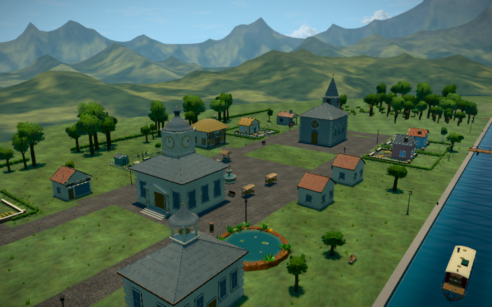
Five individual homes, tucked into the existing British/Dutch village.
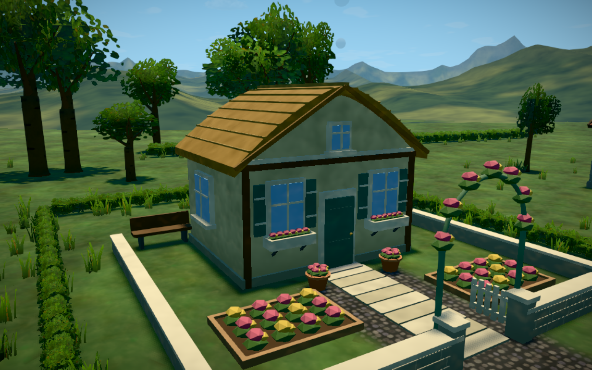
Soft thatch, sage shutters, rose arch and a stone-walled front garden.
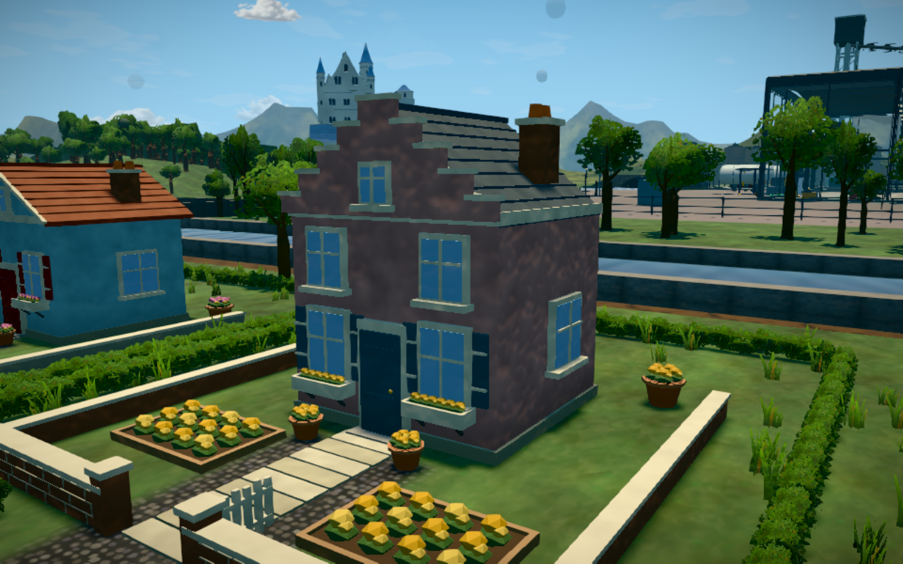
A pastel stepped gable, tall sash windows and sunny flower borders.
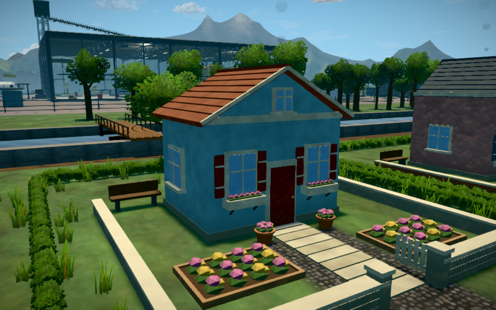
Blue render, clay tiles, red shutters and pink window-box flowers.
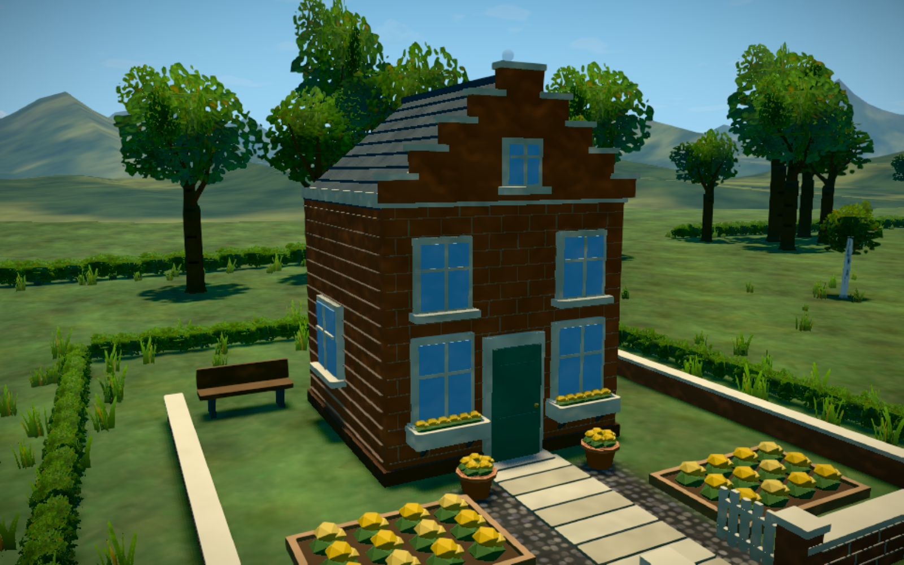
Warm brickwork, Dutch roofline and a neat walled garden.
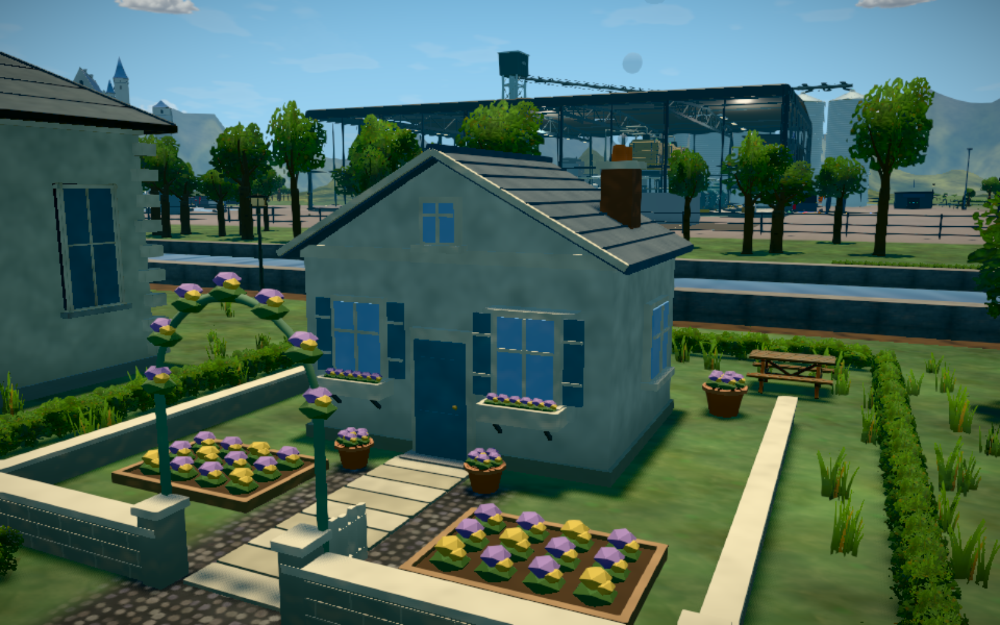
Cream walls, blue slate, a little bay window and a lavender rose arch.
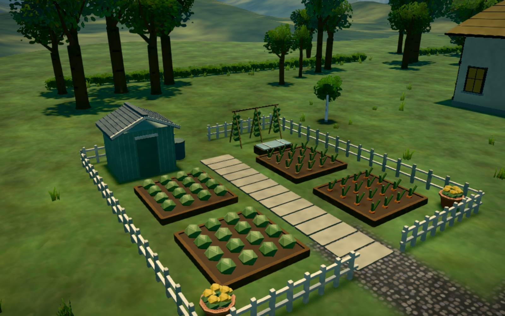
Cabbages, carrots, onions and climbing beans, with a shed, rain barrel and cold frame.
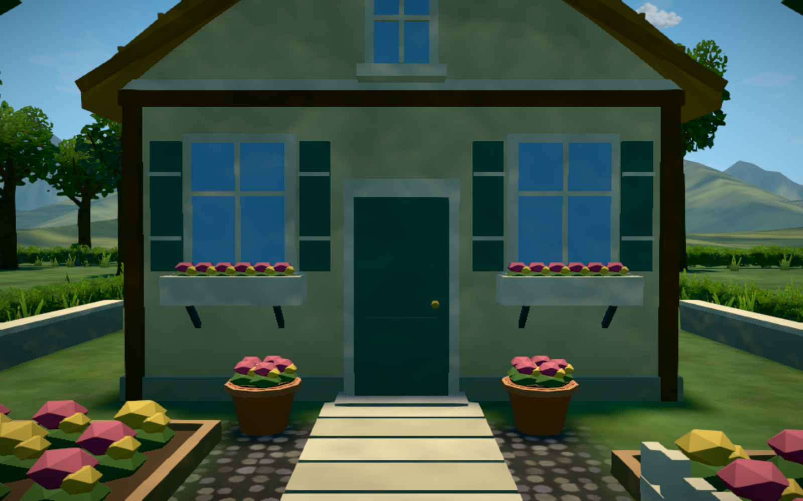
Open picket gates, stepping stones and terracotta pots.
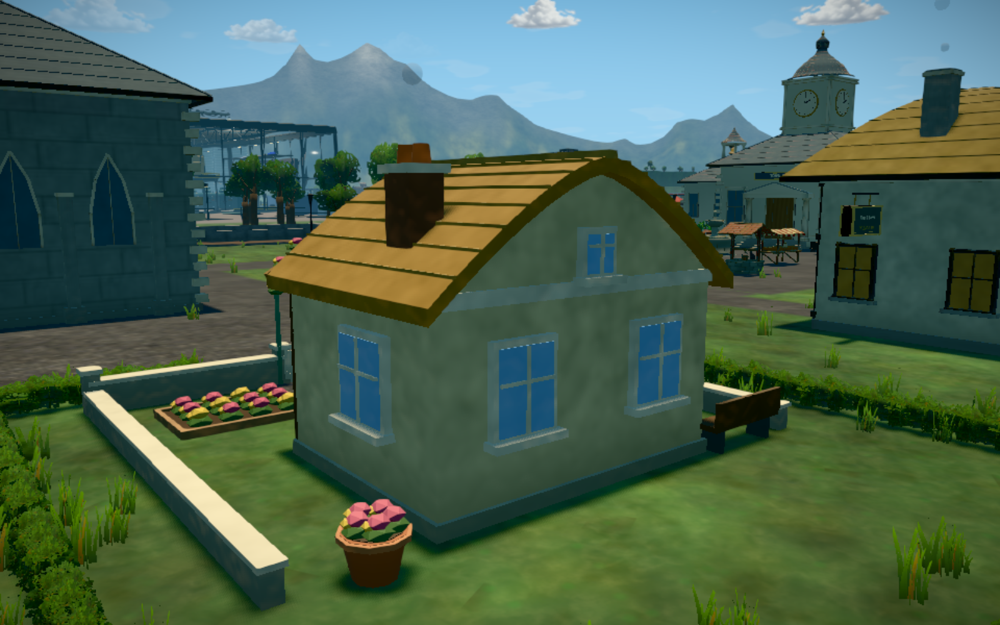
Framed rear windows and a finished roofline behind Honey Cottage.
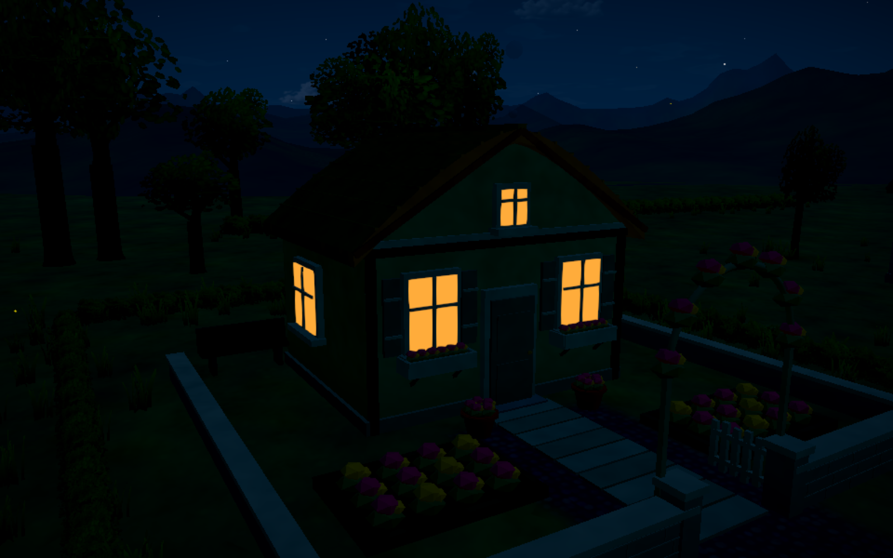
Warm windows and quiet gardens under the existing village lighting.
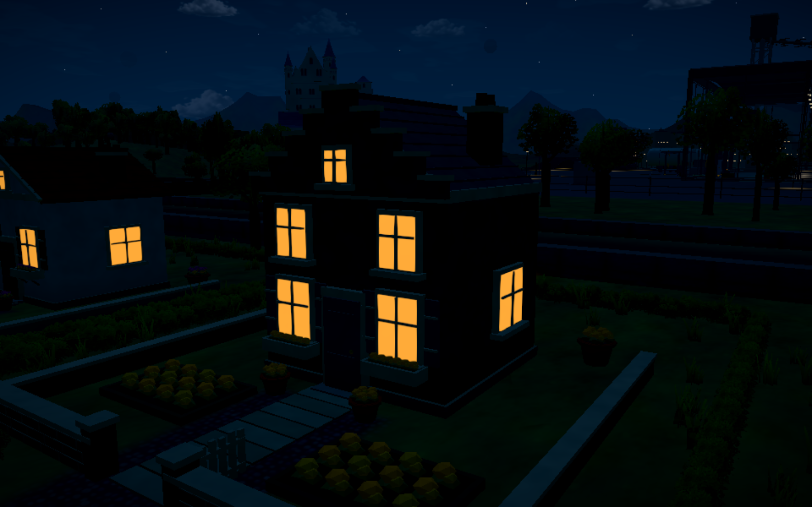